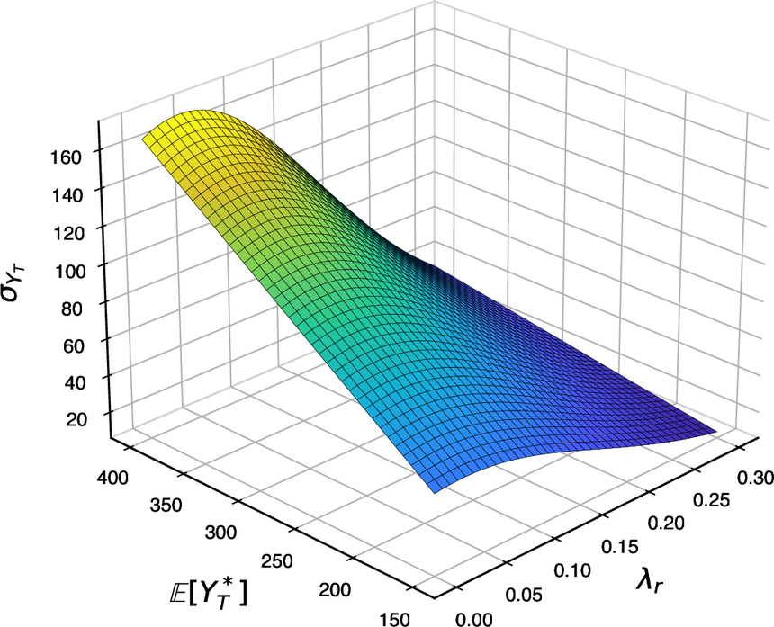

Optimal Life Insurance Decision in Mean-Variance DC Management with Mortality Improvements
How should workers adjust their insurance as they live longer? In our model, longer working-life survival shifts insurance demand toward early adulthood, when more future earnings are at stake.